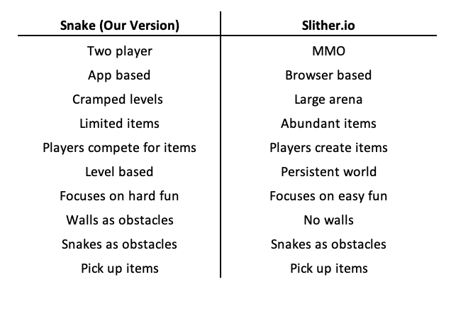

Overview
Topic
Group 16 will work towards building a game. By the completion of Assessment Task 3 we aim to have prototypes (both paper and digital), a level editor program, visual character designs and a list of further improvements that we can make. The prototypes and level editor will allow the game to be rapidly developed as we continue post subject. The game that we will aim to create is a 2 player version of snake. We create this game with the intention of learning the game development process. In the event that we do continue developing the game, we will look to publish that game at IndieDB or itch.io.
Motivation
The members of Group 16 have diverse levels of experience with using Information Technologies to build projects. As one of our members has worked as a game designer, the group thought that creating a game would leverage that unique set of skills and experiences. As videogames are complex products, creating a game will give all members of our group a chance to participate at their current skill levels. Ideas from the original project have been simplified or altered to work within the teams' skills. This included removing of internet connectivity, the addition of a level editor, and reduction of the players to 2. This also includes the production of paper prototypes as well as coded prototypes.
Landscape
Snake is a very old game, widely popularised via Nokia mobile phones. It is simple to grasp, which makes it a good choice for those wanting to learn how to code games. Because of this, many Snake clones exist all over the web. Slither.io is a game that takes snake and modernises it for an online audience. Our games are quite different. Slither.io is a massively multiplayer browser-based snake game, whereas our game will focus on two players only. In Slither.io players move their snake around an open arena eating dots to increase the size of their snake. Players must avoid other snakes while manoeuvring around the arena, however, the arena is huge, making it easy to avoid other snakes. It is possible for snakes to drop dots for other snakes to pick up which encourages cooperative play. Slither.io has no walls whereas our game uses walls as a challenge. We expect rounds in our game would be quite short and competitive, whereas Slither.io is a persistent world that players can drop in or out of. Thinking about Lazzaro’s Four Keys to fun, while both games feature people fun, our game will focus on hard fun whereas Slither.io focuses strongly on easy fun.
